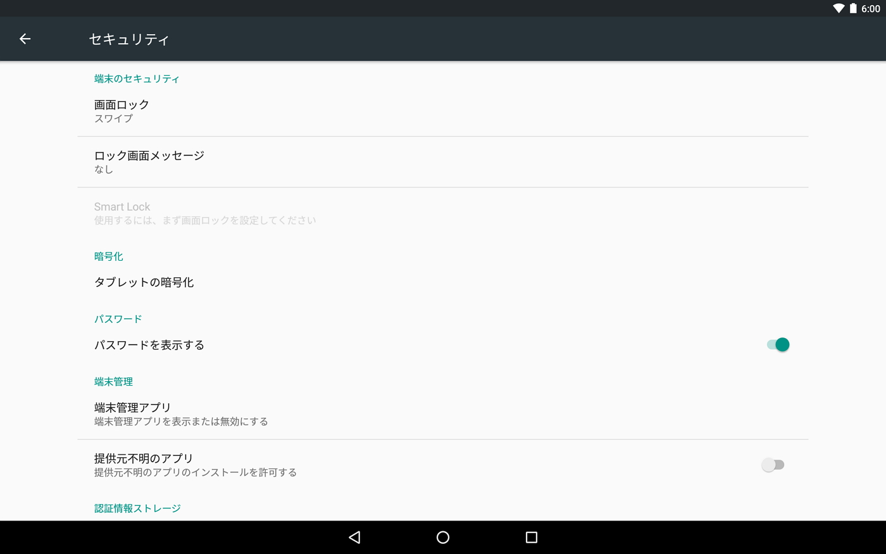

「セキュリティ」設定
本機のセキュリティを設定します
| 画面のセキュリティ | |
|---|---|
| 画面のロック | 画面ロックの方法を選ぶことができます。 |
| ロック画面情報 | ロック画面に表示するテキストを入力できます。 |
| Smart Lock | |
| 暗号化 | |
| タブレットの暗号化 | 本機にあるすべてのデータを暗号化します。暗号化は元に戻せません。暗号化されていない状態に戻すためには、すべてのデータを削除して初期化する必要があります。 |
| パスワード | |
| パスワードを表示する | チェックをすると、ロック画面でパスワードを入力したときに入力した文字を表示します。 |
| デバイス管理 | |
| 端末管理者 | 端末管理者を表示します。 |
| 提供元不明のアプリ | チェックすると、Google Playストア以外のサイトやメールなどから入手したアプリケーションのインストールを許可します。本機および個人データを保護するため、Google Playなどの信頼できる発行元からのアプリケーションのみインストールするようにしてください。 |
| 認証情報ストレージ | |
| ストレージの形式 | バックアップ |
| 信頼できる認証 | 認証情報を表示します。証明書の名称をタップすると詳細情報が表示されます。 |
| SDメモリカードからインストール | USB接続されたHDDやSDメモリカードなどから認証情報や証明書をインストールします。 |
| 認証ストレージの消去 | 認証ストレージからすべての認証情報や証明書を消去します。 |
| 進階 | |
| 信頼エージェント | Smart Lock などの機能について信頼エージェントを管理します。 |
| 画面固定 | 有効にすると、端末で現在の画面が表示され続けます。画面固定を使用する方法をご覧ください。 |
| 使用履歴にアクセスできるアプリ | 端末上のアプリ使用履歴データにアクセスできるアプリを管理します。 |